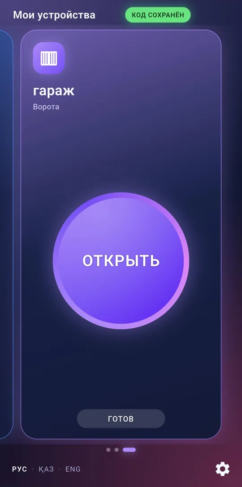
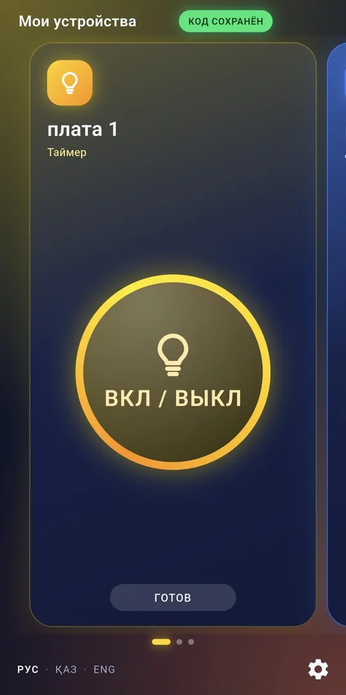
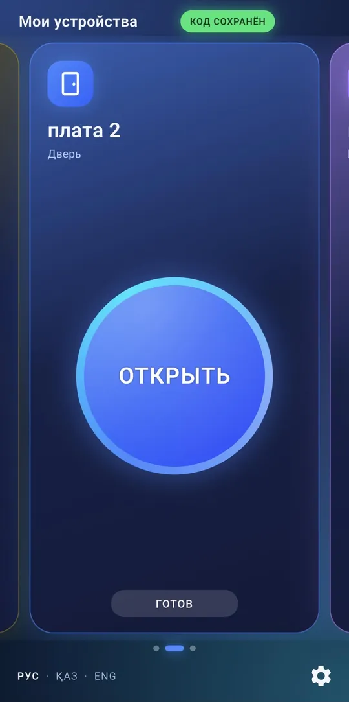
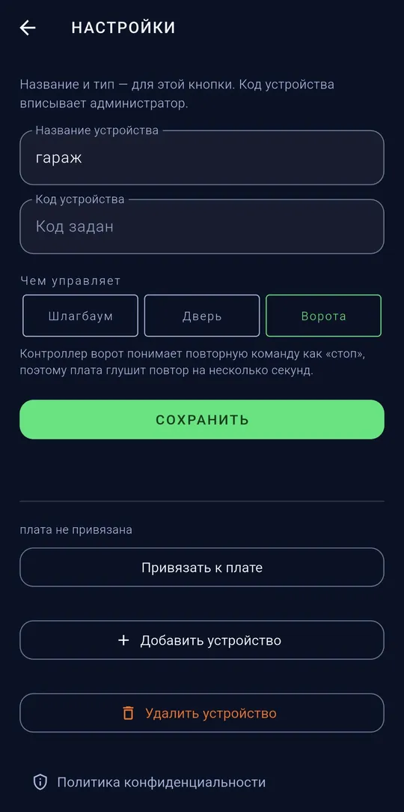

Модули управления шлагбаумами и воротами со смартфонаШлагбаум мен қақпаны смартфоннан басқару модульдеріControl modules for barriers and gates from your smartphone
Компания ZMK производит Bluetooth-модули управления и SOS-детекторы. Модули подключаются к уже установленному шлагбауму, воротам или электрозамку и позволяют открывать их из приложения ZMK. Также выполняем монтаж, ремонт и обслуживание шлагбаумов, автоматики ворот и домофонов. Офис в Алматы, доставка по всему Казахстану.ZMK компаниясы Bluetooth басқару модульдері мен SOS-детекторлар шығарады. Модульдер орнатылған шлагбаумға, қақпаға немесе электр құлпына қосылады және оларды ZMK қосымшасынан ашуға мүмкіндік береді. Сондай-ақ шлагбаумдарды, қақпа автоматикасын және домофондарды орнатамыз, жөндейміз және қызмет көрсетеміз. Кеңсе Алматыда, бүкіл Қазақстан бойынша жеткіземіз.ZMK makes Bluetooth control modules and SOS detectors. The modules connect to your existing barrier, gates or electric lock and let you open them from the ZMK app. We also install, repair and service barriers, gate automation and intercoms. Office in Almaty, delivery across Kazakhstan.
Продукция ZMKZMK өнімдеріZMK products



Bluetooth-модуль ZMKZMK Bluetooth-модуліZMK Bluetooth module
Модуль управления: открывает шлагбаум, ворота и дверь из приложения ZMK.Басқару модулі: шлагбаумды, қақпаны және есікті ZMK қосымшасынан ашады.Control module: opens barriers, gates and doors from the ZMK app.
- Открытие шлагбаума, ворот, калитки и двери из приложенияШлагбаумды, қақпаны, қақпашаны және есікті қосымшадан ашуOpens barriers, gates, wickets and doors from the app
- Управление освещением и другими приборами: импульс, удержание, включение, выключение, таймерЖарықты және басқа құрылғыларды басқару: импульс, ұстап тұру, қосу, өшіру, таймерControls lights and other devices: pulse, hold, on, off, timer
- Работает по Bluetooth: интернет, сервер и SIM-карта не требуютсяBluetooth арқылы жұмыс істейді: интернет, сервер және SIM-карта қажет емесWorks over Bluetooth: no internet, server or SIM card needed
- Подключается к существующему блоку управленияҚолданыстағы басқару блогына қосыладыConnects to your existing control unit
- Приложение на казахском, русском и английском языкахҚосымша қазақ, орыс және ағылшын тілдеріндеApp in Kazakh, Russian and English


ZMK Bluetooth + SOSZMK Bluetooth + SOSZMK Bluetooth + SOS
Одно устройство: управление со смартфона и автоматическое открытие по сирене.Бір құрылғы: смартфоннан басқару және сирена бойынша автоматты ашу.One device: smartphone control plus automatic opening on a siren.
- Все возможности Bluetooth-модуля: шлагбаум, ворота, калитка, освещениеBluetooth-модулінің барлық мүмкіндіктері: шлагбаум, қақпа, қақпаша, жарықEverything the Bluetooth module does: barrier, gates, wicket, lights
- Автоматическое открытие при сирене скорой помощи, полиции и пожарной службыЖедел жәрдем, полиция және өрт сөндіру қызметінің сиренасы бойынша автоматты ашуAutomatic opening on ambulance, police and fire sirens
- Работает без интернета и SIM-картыИнтернетсіз және SIM-картасыз жұмыс істейдіWorks without internet or a SIM card
- Питание 220 В, монтаж выполняет специалистҚуаты 220 В, орнатуды маман жүргізеді220 V power supply, installed by a specialist
SOS-детектор ZMKZMK SOS-детекторыZMK SOS detector
Автоматически открывает шлагбаум при сигнале сирены экстренных служб.Шұғыл қызметтердің сирена дабылы естілгенде шлагбаумды автоматты түрде ашады.Opens the barrier automatically when an emergency siren sounds.
- Распознаёт сирены скорой помощи, полиции и пожарной службыЖедел жәрдем, полиция және өрт сөндіру қызметінің сиреналарын танидыRecognises ambulance, police and fire service sirens
- Подаёт команду «Открыть» на блок управления шлагбаумаШлагбаумның басқару блогына «Ашу» пәрменін бередіSends the “Open” command to the barrier control unit
- Работает автономно, без смартфона и интернетаСмартфонсыз және интернетсіз дербес жұмыс істейдіWorks on its own, without a smartphone or internet
- Питание 220 В, монтаж выполняет специалистҚуаты 220 В, орнатуды маман жүргізеді220 V power supply, installed by a specialist
- Управление со смартфона не предусмотреноСмартфоннан басқару қарастырылмағанNo smartphone control
Работа устройства зависит от правильного размещения и подключения. Детектор не заменяет официальные системы оповещения.Құрылғының жұмысы дұрыс орналастыру мен қосуға байланысты. Детектор ресми хабарлау жүйелерін алмастырмайды.Operation depends on correct placement and wiring. The detector does not replace official alert systems.
Узнать стоимостьБағасын білуGet a priceПриложение ZMKZMK қосымшасыThe ZMK app
Несколько устройств в одном приложении: шлагбаум, ворота, дверь, освещение. Переключение свайпом.Бір қосымшада бірнеше құрылғы: шлагбаум, қақпа, есік, жарық. Сырғыту арқылы ауысу.Several devices in one app: barrier, gates, door, lights. Swipe to switch.
Так выглядит значок приложения ZMK на экране телефонаZMK қосымшасының белгішесі телефон экранында осылай көрінедіThis is how the ZMK app icon looks on your phone


Подключение Bluetooth-модуляBluetooth-модульді қосуInstalling the Bluetooth module
Проверка совместимостиҮйлесімділікті тексеруCompatibility check
Отправьте модель или фотографию блока управления шлагбаума или ворот.Шлагбаум не қақпа басқару блогының моделін немесе фотосуретін жіберіңіз.Send the model or a photo of the barrier or gate control unit.
ПодключениеҚосуInstallation
Специалист подключает модуль к входу «Открыть» блока управления.Маман модульді басқару блогының «Ашу» кірісіне қосады.A specialist connects the module to the “Open” input of the control unit.
Работа из приложенияҚосымшадан басқаруUse the app
Устройство добавляется в приложение ZMK, и шлагбаум открывается со смартфона.Құрылғы ZMK қосымшасына қосылады, шлагбаум смартфоннан ашылады.The device is added to the ZMK app and the barrier opens from your phone.
УслугиҚызметтерServices
ШлагбаумыШлагбаумдарBarriers
Монтаж, ремонт, обслуживание, комплектующиеОрнату, жөндеу, қызмет көрсету, бөлшектерInstallation, repair, service, parts
Автоматика воротҚақпа автоматикасыGate automation
Распашные, откатные и секционные воротаАшылмалы, сырғымалы және секциялық қақпаларSwing, sliding and sectional gates
ПультыПульттерRemotes
Подбор, дубликаты, программированиеТаңдау, көшірме жасау, бағдарламалауMatching, copies, programming
ДомофоныДомофондарIntercoms
Аудио- и видеодомофоны, электрозамкиАудио- және бейнедомофондар, электр құлыптарAudio and video intercoms, electric locks
Часто задаваемые вопросыЖиі қойылатын сұрақтарFrequently asked questions
Нужен ли интернет для работы?Жұмыс істеу үшін интернет керек пе?Is internet required?
Нет. Bluetooth-модуль связывается со смартфоном напрямую, SOS-детектор работает автономно.Жоқ. Bluetooth-модуль смартфонмен тікелей байланысады, SOS-детектор дербес жұмыс істейді.No. The Bluetooth module talks to the phone directly, and the SOS detector works on its own.
Подойдёт ли оборудование к моему шлагбауму?Жабдық менің шлагбаумыма сай келе ме?Will it work with my barrier?
На блоке управления необходим вход «Открыть». Отправьте модель или фотографию маркировки блока, и мы проверим совместимость.Басқару блогында «Ашу» кірісі болуы керек. Блоктың моделін немесе таңбасының фотосуретін жіберіңіз, біз үйлесімділігін тексереміз.The control unit needs an “Open” input. Send the model or a photo of its label and we will check compatibility.
Сколько устройств можно добавить в приложение?Қосымшаға қанша құрылғы қосуға болады?How many devices can the app hold?
Несколько: например, шлагбаум, ворота и калитку.Бірнешеу: мысалы, шлагбаум, қақпа және қақпаша.Several, for example a barrier, gates and a wicket.
Чем отличаются три устройства?Үш құрылғының айырмашылығы неде?How do the three devices differ?
Bluetooth-модуль открывает шлагбаум и ворота со смартфона. SOS-детектор открывает шлагбаум только по сирене экстренных служб. ZMK Bluetooth + SOS объединяет обе функции в одном устройстве.Bluetooth-модуль шлагбаум мен қақпаны смартфоннан ашады. SOS-детектор шлагбаумды тек шұғыл қызметтердің сиренасы бойынша ашады. ZMK Bluetooth + SOS екі функцияны бір құрылғыда біріктіреді.The Bluetooth module opens barriers and gates from a phone. The SOS detector opens the barrier only on an emergency siren. ZMK Bluetooth + SOS combines both in one device.
Узнайте стоимостьБағасын біліңізGet a price
Опишите задачу и по возможности приложите фотографию оборудования. Специалист ответит и подготовит предложение.Міндетті сипаттап, мүмкіндігінше жабдықтың фотосуретін қоса жіберіңіз. Маман жауап беріп, ұсыныс дайындайды.Describe your task and, if possible, attach a photo of the equipment. A specialist will reply with an offer.
Офис в Алматы. Доставка по всему Казахстану.Кеңсе Алматыда. Бүкіл Қазақстан бойынша жеткізу.Office in Almaty. Delivery across Kazakhstan.
АлександрАлександрAlexander · +7 707 266 91 54 (WhatsApp) · Telegram @Zmk_kz · zmkalexandr@gmail.com